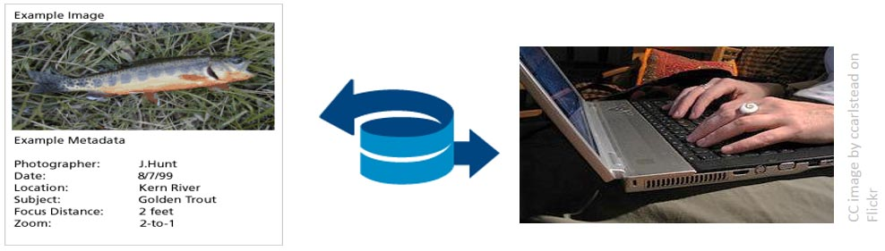
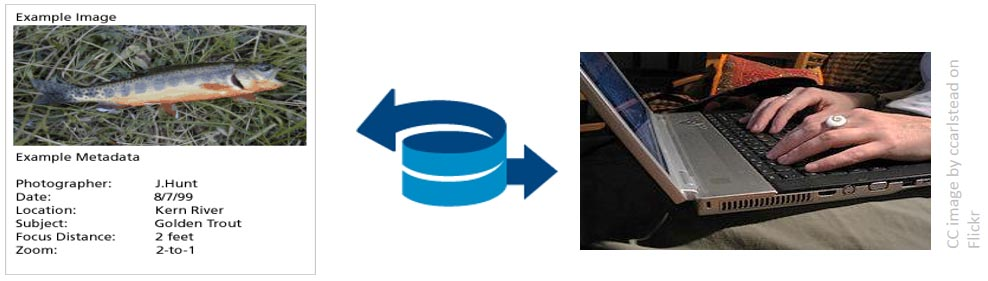
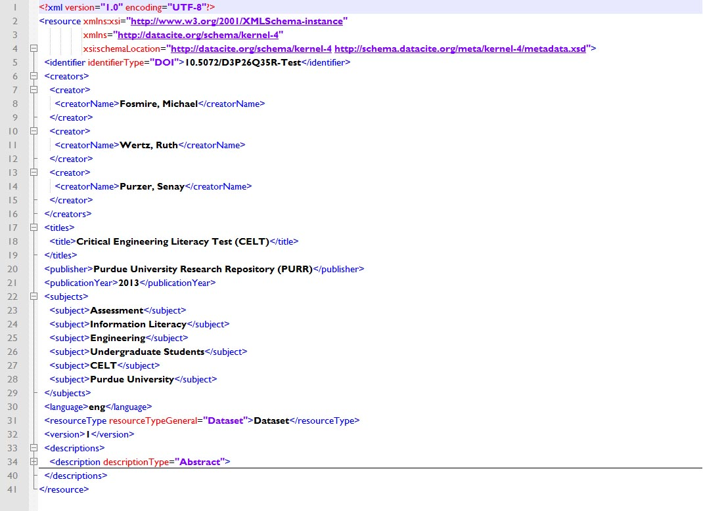

Data Management in the
Research Environment
Research Environment
RSM 674 Spring
Dr. Timothy Norris - Data Curation Fellow - tnorris@miami.edu
Angela Clark - Librarian Associate Professor RSMAS - aclark@rsmas.miami.edu
Angela Clark - Librarian Associate Professor RSMAS - aclark@rsmas.miami.edu
Todays Outline
Describing Data
Describing Data
- Describing Data (who, what, standards, etc.)
- Describing metadata
Metadata
?
A love letter to the future
"Scientific metadata provide the information necessary for investigators separated by time, space, institution or disciplinary norm to establish common ground." - Christine Borgman
Edwards, Mayernik, Betcheller, Bowker, and Borgman (2011). Science friction: Data, metadata, and collaboration. Social Studies of Science 41(5): 667-690. http://dx.doi.org/10.1177/0306312711413314

Research Data Cycle
Data Collection

DataONE Education Module: Lesson 07: Metadata. DataONE.
https://www.dataone.org/education-modules
https://www.dataone.org/education-modules
From Field/Lab Notes to Datasets
| Species | Average Temperature | Temperature Standard Deviation | Number of Observations | Minimum Temperature | Maximum Temperature |
| Northern Red-legged Frog | 4.4 | --- | 1 | 4.4 | 4.4 |
| Tailed Frog | 7.0 | 3.0 | 3 | 4 | 10 |
| Arizona Toad | 10.0 | --- | 1 | 10 | 10 |
| Strecker's Chorus Frog | 10.5 | 2.0 | 11 | 9 | 16 |
| Oregon Spotted Frog | 11.0 | 15.5 | 2 | 0 | 22 |
| New Jersey Chorus Frog | 11.5 | 4.5 | 17 | 3 | 22 |
| Wood Frog | 12.5 | 5.5 | 897 | 0 | 28.8 |
| Spring Peeper | 13.2 | 5.6 | 569 | -1 | 32 |
| Red-legged Frog | 13.3 | 5.9 | 16 | 4 | 27 |
DataONE Education Module: Lesson 07: Metadata. DataONE.
https://www.dataone.org/education-modules
https://www.dataone.org/education-modules
From Datasets to Published Papers
DataONE Education Module: Lesson 07: Metadata. DataONE.
https://www.dataone.org/education-modules
https://www.dataone.org/education-modules
What is a Dataset
- Definition: A collection of data
- Generally datasets can be defined as:
- Spatial – a collection of logically related features arranged in a prescribed manner such as GIS map layers, water features, etc
- Tabular – a file, spreadsheet, data in a table
- Many tabular datasets are inherently “spatial”, e.g. water-quality samples associated with stream collection sites
- Elements in a dataset can include:
- Values, measures, points, coordinates, conditions, qualities, frequencies, or attributes that are a result of an observational study
DataONE Education Module: Lesson 07: Metadata. DataONE.
https://www.dataone.org/education-modules
https://www.dataone.org/education-modules
Working with data

- When you provide data to someone else, what types of information would you want to include with the data?
- When you receive a dataset from an external source, what types of details do you want to know about the data?
DataONE Education Module: Lesson 07: Metadata. DataONE.
https://www.dataone.org/education-modules
https://www.dataone.org/education-modules
Working with data
Providing data
|
Receiving data
|
DataONE Education Module: Lesson 07: Metadata. DataONE.
https://www.dataone.org/education-modules
https://www.dataone.org/education-modules
What is Metadata?
Metadata is data 'reporting'
Metadata is data 'reporting'
- WHO created the data?
- WHAT is the content of the data?
- WHEN were the data created?
- WHERE is the data geographically?
- HOW were the data developed?
- WHY were the data developed?
DataONE Education Module: Lesson 07: Metadata. DataONE.
https://www.dataone.org/education-modules
https://www.dataone.org/education-modules
Metadata you already know
Human Readable
Human Readable
TY - BOOK
DB - /z-wcorg/
DP - http://worldcat.org
ID - 702896
LA - English
T1 - Traces on the Rhodian shore : nature and culture in Western thought from ancient times to the end of the eighteenth century
AU - Glacken, Clarence J.
PB - University of California Press
CY - Berkeley
Y1 - 1973///
SN - 0520023676 9780520023673 0520032160 9780520032163
ER -
DB - /z-wcorg/
DP - http://worldcat.org
ID - 702896
LA - English
T1 - Traces on the Rhodian shore : nature and culture in Western thought from ancient times to the end of the eighteenth century
AU - Glacken, Clarence J.
PB - University of California Press
CY - Berkeley
Y1 - 1973///
SN - 0520023676 9780520023673 0520032160 9780520032163
ER -
Metadata you already know
Machine Readable
Machine Readable
Describing Metadata
Descriptive
Structural
Administrative
- Project: Describe the overall project (author, date, place, etc.)
- Technical: Describe individual project elements (tables, column headers, etc.)
Structural
- Describe how different elements of the data(set) fit together
Administrative
- Rights Management
- Preservation
National Information Standards Organization (NISO) (2004). Understanding Metadata.
http://www.niso.org/publications/press/UnderstandingMetadata.pdf
http://www.niso.org/publications/press/UnderstandingMetadata.pdf
What is a Metadata Standard

- A Standard provides a structure to describe data with:
- Common terms to allow consistency between records
- Common definitions for easier interpretation
- Common language for ease of communication
- Common structure to quickly locate information
- In search and retrieval, standards provide:
- Documentation structure in a reliable and predictable format for computer interpretation
- A uniform summary description of the dataset

DataONE Education Module: Lesson 07: Metadata. DataONE.
https://www.dataone.org/education-modules
https://www.dataone.org/education-modules
Standards and Schemas
Idea of standardized set of elements
- Minimal to maximal, depends on purpose, audience, domain, and structure
Dublin Core
- One of the most common (XML) – not Dublin Ireland
- Used as a starting point for many other schema
The Dublin Core Metadata Element Set is a vocabulary of fifteen properties for use in resource description. The name "Dublin" is due to its origin at a 1995 invitational workshop in Dublin, Ohio; "core" because its elements are broad and generic, usable for describing a wide range of resources.
DC
Title
Creator
Subject
Description
Publisher
Contributor
Date
Type
Format
Identifier
Source
Language
Relation
Coverage
Rights
Title
Creator
Subject
Description
Publisher
Contributor
Date
Type
Format
Identifier
Source
Language
Relation
Coverage
Rights
DC Example
Title=
Creator=
Creator=
Creator=
Subject=
Description=
Publisher=
Publisher=
Date=
Type=
Format=
Identifier=
Language=
Title=
Creator=
Creator=
Creator=
Subject=
Description=
Publisher=
Publisher=
Date=
Type=
Format=
Identifier=
Language=
”Metadata Demystified”
”Brand, Amy”
”Daly, Frank”
"Meyers, Barbara”
”metadata”
”Presents an overview of metadata conventions in publishing.”
”NISO Press”
”The Sheridan Press”
”2003-07"
”Text”
”application/pdf”
”http://www.niso.org/standards/resources/Metadata_Demystified.pdf”
”en”
Standards and Schemas
Project Open Data
- US Government standard (json-ld)
- 2013 data sharing requirements and open-data policy briefs
The White House developed Project Open Data – this collection of code, tools, and case studies – to help agencies adopt the Open Data Policy and unlock the potential of government data. Project Open Data will evolve over time as a community resource to facilitate broader adoption of open data practices in government. Anyone – government employees, contractors, developers, the general public – can view and contribute.
Project Open Data Required Fields
| Field | Label | Definition | Required |
|---|---|---|---|
| title | Title | Human-readable name of the asset. Should be in plain English and include sufficient detail to facilitate search and discovery. | Always |
| description | Description | Human-readable description (e.g., an abstract) with sufficient detail to enable a user to quickly understand whether the asset is of interest. | Always |
| keyword | Tags | Tags (or keywords) help users discover your dataset; please include terms that would be used by technical and non-technical users. | Always |
| modified | Last Update | Most recent date on which the dataset was changed, updated or modified. | Always |
| publisher | Publisher | The publishing entity and optionally their parent organization(s). | Always |
| contactPoint | Contact Name and Email | Contact person’s name and email for the asset. | Always |
| identifier | Unique Identifier | A unique identifier for the dataset or API as maintained within an Agency catalog or database. | Always |
| accessLevel | Public Access Level | The degree to which this dataset could be made publicly-available, regardless of whether it has been made available. Choices: public (Data asset is or could be made publicly available to all without restrictions), restricted public (Data asset is available under certain use restrictions), or non-public (Data asset is not available to members of the public). | Always |
| bureauCodeUSG | Bureau Code | Federal agencies, combined agency and bureau code from OMB Circular A-11, Appendix C (PDF, CSV) in the format of 015:11. |
Always |
| programCodeUSG | Program Code | Federal agencies, list the primary program related to this data asset, from the Federal Program Inventory. Use the format of 015:001. |
Always |
Standards and Schemas
The DataCite Metadata Schema is a list of core metadata properties chosen for an accurate and consistent identification of a resource for citation and retrieval purposes, along with recommended use instructions.

example datacite XML for example dataset
GIS Metadata Example
GIS Metadata Example
GIS Metadata Example
GIS Metadata Example
GIS Metadata Example
GIS Metadata Example
Schemas as Walls
Willis, Greenberg and White (2012). Analysis and Synthesis of Metadata Goals for Scientific Data, Journal of the American Society for Information Science and Technology, 63(8):1505–1520. http://scholarship.law.duke.edu/faculty_scholarship/2713/
Metadata Review
- metadata is a description of your data for a future user (you perhaps?)
- What does this person need to know to use the data properly?
- Does this person need discipline specific knowledge? How much?
- Two general kinds of descriptive metadata
- Project level (contextual)
- Technical (data level, units, headers, etc.)
- How will the metadata be captured
- Notebooks (electronic??)
- Device Capture
- What format (with justification)
- Discipline specific standard? Other standard?
- Machine or human readable (both?)
Acronym Awareness
Schemas and Standards
|
Common Terms
|
README.txt
Assignment #3
- Choose one of the following:
- Create metadata for your research data using an existing schema
- create a metadata schema for your data